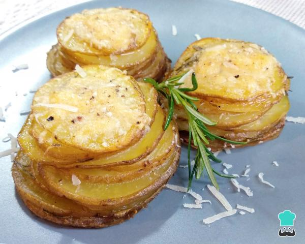

Receita de Batata assada no forno crococante
Ingredientes
3 batatas médias
3 colheres de sopa de manteiga
2 ramos de alecrim
2 dentes de alho
1 colher de sopa de sal (colher rasa)
Queijo parmesão a gosto
Pimenta do reino
Modo de Preparo:
- Numa panela coloque a manteiga, os alhos picados ou amassados e as folhinhas de alecrim. Leve ao fogo baixo e deixe por 5 minutos, para a manteiga derreter e os alhos e o alecrim soltarem seu sabor.
- Enquanto isso, lave bem as batatas, pois elas serão cozinhadas com a casca. Depois corte as batatas em fatias bem finas, com a ajuda de uma mandolina ou com uma faca bem afiada.
- Coloque as fatias de batata numa tigela e adicione os temperos preparados na panela. Adicione sal e pimenta a gosto e misture muito bem.
- Coloque as fatias de batata sobrepostas numa forma de cupcake ou de muffin, como na foto, da maior fatia para a menor. Cubra com papel alumínio e leve para assar no forno preaquecido a 180ºC durante 20 minutos.
- Depois do tempo indicado as fatias de batata deverão estar macias, porém falta dourar.
- Retire sua batata assada do forno quando estiver douradinha e levemente crocante nas beiradas.